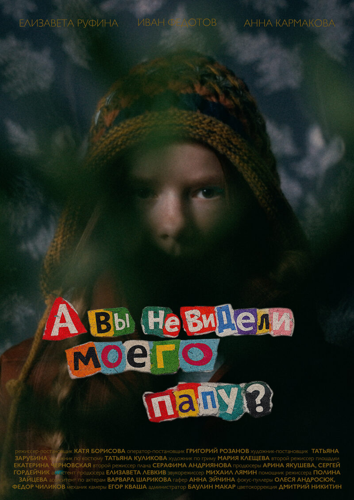

01
«А вы не видели моего папу?»
Игровой фильм
2026
22 минуты
драма, магический реализм
Рольавтор идеи, режиссер, продюсер, режиссер монтажа
10-летняя Тата верит в волшебство: она переписывается с папой через тайный портал — цветочный горшок в гостиной. Когда папа уезжает в командировку, а записки перестают доходить, мама начинает вести себя странно и в итоге сообщает дочери, что папа умер. Тата не верит и решает выяснить правду самостоятельно.
премьера готовится · кадры пока скрыты
Кинопоиск ↗
В ролях
Елизавета Руфина, Иван Федотов, Анна Кармакова
Оператор-постановщик
Григорий Розанов
Художник-постановщик
Татьяна Зарубина
Продюсеры
Арина Якушева, Сергей Гордейчик
Звукорежиссер
Михаил Лямин
Цветокоррекция
Дмитрий Никитин